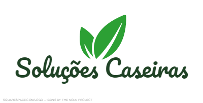

Toggle

Página Principal
Herpes Labial
Chá Preto
Ingredientes
Modo de preparação
Video
• 2 sachês de chá preto.
• Meio litro de água.
Colocar os sachês em uma chaleira com meio litro de água e deixar ferver.
Deixe arrefecer e depois aplicar os sachês sobre o herpes ou por o chá num algodão e passar sobre ele.